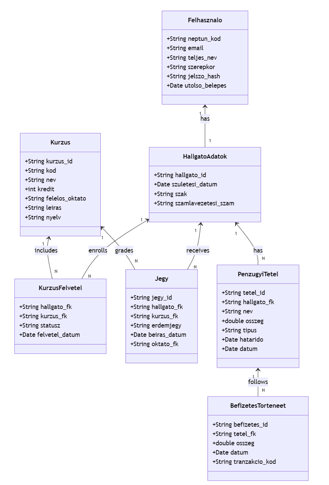

Csoport neve: BETYÁRBRIGANTIK
Feladat sorszáma: 4
Feladat címe: Janus webalkalmazás
Analízis modell
Gyakorlatvezető:
SÁTÁN ÁDÁM
Csoport tagok:
|
SÁTÁN ÁDÁM |
TANKÖR |
adam.satan@uni-miskolc.hu vagy satan@iit.uni-miskolc.hu |
|
KOCSÁN LÁSZLÓ |
EK298H |
kocsalaci12@gmail.com |
|
UJVÁRI ZSOMBOR BALÁZS |
QPQ7K4 |
zsombor.dobcsi@gmail.com |
|
VÁGÁSI BENCE |
FNCCGA |
bence.vagasi@gmail.com |
|
HÉJJAS GYULA |
E24HDO |
hejjasgyula2004@gmail.com |
|
POCSAI BÁLINT |
EQJL0O |
pocsaibalint@gmail.com |
2025.10.19.
Történet
|
Dátum |
Verzió |
Leírás |
Szerző |
|---|---|---|---|
|
2025. 11. 15. |
1.0 |
Kezdeti váz és struktúra felállítása (2. fejezet) |
Kocsán László |
|
2025. 11. 17. |
1.1 |
Statikus, Dinamikus modell finomítása és Operációk azonosítása |
Héjjas Gyula, Ujvári Zsombor Balázs, Vágási Bence |
|
2025. 11. 18. |
1.2 |
Végleges analízis osztálydiagram és osztályleírások (3.6) hozzáadása |
Héjjas Gyula, Pocsai Bálint |
3. Tanulmányi Alrendszer modellje
3.1.2 Attribútumok azonosítása
3.5 Az analízis modell osztálydiagramja.
3.6. Az analízis modell osztályainak listája.
Az Analízis Modell dokumentum célja a Janus webalkalmazás belső struktúrájának és logikájának meghatározása, a Software Követelmény Specifikáció (SRS) dokumentumban rögzített követelmények alapján. A modell a problématér logikai osztályait, azok kapcsolatait és felelősségeit rögzíti, függetlenül a technológiai megvalósítástól. Ez a munka a Java Spring Boot alapú backend logikai alapjait képezi.
Ebben a fázisban az SRS-ben azonosított fő fogalmakra és entitásokra épülő kezdeti osztályokat definiáljuk, kiindulva a rendszer legfontosabb felelősségeiből: a felhasználók, a kurzusok és az adminisztráció kezelése.
Az osztálydiagram ezen a ponton az alapvető entitásokat és a köztük lévő asszociációkat mutatja be. A diagram méretéből adódóan a teljes ábra a dokumentum X. Mellékletében található meg.
Az SRS és a Use Case diagramok alapján az alábbi fő osztályokat azonosítottuk:
Felhasználó
A Janus rendszerben létező összes szerepkör (Hallgató, Oktató, Adminisztrátor) általános gyökér osztálya. Kezeli az alapvető azonosító és hitelesítési információkat.
Kurzus
A Tanulmányi Alrendszer központi eleme. Rögzíti az adott tantárgy kódját, nevét, kredit értékét, valamint a hozzá tartozó Oktatót.
Vizsga
Egy adott kurzushoz tartozó, konkrét időpontra kiírt vizsga esemény. Kezeli a vizsga típusát, helyszínét, létszámkorlátját és az időpontját.
Jegy
Egy Hallgató és egy Kurzus közötti eredményt rögzítő osztály. Tartalmazza az érdemjegyet, a megszerzés dátumát és az azt beíró Oktatót.
PénzügyiTétel
A hallgatóhoz rendelt fizetési kötelezettségeket (pl. tandíj, vizsgadíj) és befizetéseket rögzítő entitás.
A funkcionális követelmények összetettsége miatt a rendszert három fő alrendszerre bontjuk, amelyek között az adatátadás RESTful API hívásokon keresztül történik:
Ezek az alrendszerek egymástól szeparált, de szorosan együttműködő mikroszolgáltatásoknak tekinthetők a megvalósítás során.
A Tanulmányi Alrendszer azonosítja, ellenőrzi és rögzíti a tanulmányi folyamatokkal kapcsolatos adatokat. Fő feladatai a kurzus- és vizsgaadminisztráció, valamint a Hallgatói előrehaladás nyomon követése.
A statikus modell a Tanulmányi Alrendszer belső osztályait, azok kapcsolatait és attribútumait rögzíti.
A kezdeti osztálydiagram kapcsolatainak pontosítása során a következőket rögzítettük:
Minden osztályhoz hozzárendeljük a legfontosabb attribútumokat, amelyek az SRS követelményeinek teljesítéséhez szükségesek. Például a Vizsga osztályhoz hozzárendeljük a létszámkorlátot és a vizsga dátumát.
Az osztályok között közös felelősségek azonosítása történt:
Az így pontosított osztálydiagram egy átmeneti munkaanyag, amely a dokumentum X. Mellékletébe kerülhet.
A dinamikus modell a rendszer időbeli viselkedését írja le, a kritikus Use Case-ek forgatókönyveire épülve.
UC-001: Tantárgy felvétele (Szekvencia diagram):
Dokumentáljuk a Hallgató, a KurzusFelvétel Controller, a Kurzus Repository és a Pénzügyi Szolgáltatás közötti üzenetváltás pontos sorrendjét. Ki kell emelni a kredithatár ellenőrzés és a pénzügyi tétel kiírásának aszinkron lépéseit.
Kurzus Állapotdiagram:
Dokumentáljuk a Kurzus osztály életciklusát: Létrehozva, Aktív (Felvehető), Lezárva (Nem vehető fel), Archiválva. Ez az állapotdiagram segít megelőzni a felvételi időszakon kívüli adminisztrációt.
A Funkcionális modell a rendszerben zajló legfontosabb adatfeldolgozási lépéseket és az adatok áramlását dokumentálja.
Kurzus Előfeltétel Ellenőrzési Folyamat:
Dokumentáljuk az adatáramlást, amikor a Hallgató megpróbál felvenni egy kurzust. Az adatáramlás a Hallgatói jegyekből indul, átmegy az Előfeltétel Validációs Szolgáltatáson, és végül logikai választ ad a KurzusFelvétel Controllernek.
A dinamikus és funkcionális modell felhasználásával az osztálydiagramot kiegészítjük az egyes osztályokhoz tartozó operációkkal.
Az alábbi hivatkozás az Analízis Modell végleges osztálydiagramjára mutat, amely tartalmazza a pontosított kapcsolatokat, az attribútumokat és a legfontosabb operációkat.
1. ábra: Tanulmányi Alrendszer Analízis Modell Osztálydiagram
A diagram természetesen tartalmaz olyan kapcsolatokat is, amely egy másik alrendszer osztályához mutat. Ilyenkor a külső osztálynak is kell szerepelnie az ábrán, de a leírása nem itt, hanem az adott alrendszernél szerepel.
A előző pontban szereplő osztálydiagram osztályainak leírása, attribútumokkal és operációkkal kiegészítve.
felelőssége, feladata: Az alapvető azonosítási és jogosultsági információk kezelése a Hallgató, Oktató és Adminisztrátor osztályok számára. Kezeli a belépés és kijelentkezés folyamatát.
együttműködők: KurzusFelvétel, Jegy, Külső SSO Rendszer (Passzív).
attribútumok
Név |
Típus |
Leírás |
|
felhasznaloID |
String |
A felhasználó egyedi azonosítója (Neptun kód). |
|
jelszoHash |
String |
A jelszó biztonságos hash értéke. |
|
szerepkor |
Enum |
A felhasználó jogosultsági szintje (Hallgató/Oktató/Admin). |
operációk
Név |
Argumentumok |
Működése, feladata |
|
ellenorizJelszo |
jelszo |
Ellenőrzi a megadott jelszót a hash érték alapján. |
|
keresKurzus |
keresoSzo |
Kurzusok keresése név, kód vagy oktató alapján. |
|
kiirkozlemeny |
cim, tartalom |
Oktató jogosultság esetén üzenet küldése a Hallgatóknak. |
felelőssége, feladata: A tantárgyak és a tanulmányi feltételek nyilvántartása. Felelős a kreditek és az előfeltételek érvényesítéséért.
együttműködők: Vizsga, KurzusFelvétel, Oktató (asszociáció), Jegy.
attribútumok
Név |
Típus |
Leírás |
|
kurzusKod |
String |
A tantárgy egyedi kódja. |
|
kreditErtek |
Egész szám |
A kurzus teljesítéséért járó kredit. |
|
kapacitas |
Egész szám |
A kurzusra felvehető hallgatók maximális száma. |
operációk
Név |
Argumentumok |
Működése, feladata |
|
ellenorizElfeltetel |
hallgatoID |
Ellenőrzi, hogy a hallgató teljesítette-e a felvételhez szükséges előfeltételeket. |
|
hozzaadVizsga |
vizsgaObjektum |
Új vizsgaidőpont felvétele a kurzushoz. |
|
frissitKapicatas |
ujErtek |
A kurzus kapacitásának módosítása adminisztrátor által. |
felelőssége, feladata: Egy adott időpontra kiírt vizsgához tartozó adatok nyilvántartása. Kezeli a jelentkezéseket és a szabad helyek számát.
együttműködők: Kurzus, Hallgató (VizsgaJelentkezés asszociáción keresztül).
attribútumok
Név |
Típus |
Leírás |
|
vizsgaID |
Long |
A vizsga egyedi azonosítója. |
|
idopont |
DateTime |
A vizsga dátuma és ideje. |
|
maxHelyek |
Egész szám |
A vizsgára maximálisan jelentkezhető hallgatók száma. |
operációk
Név |
Argumentumok |
Működése, feladata |
|
jelentkezik |
hallgatoID |
Hallgatói jelentkezés rögzítése, helyek ellenőrzése. |
|
torolJelentkezes |
hallgatoID |
Hallgató törlése a vizsgáról, helyek frissítése. |
|
ellenorizHatarido |
nincs |
Ellenőrzi, hogy a jelentkezési határidő még érvényes-e. |
felelőssége, feladata: A Hallgatói teljesítmény és a megszerzett eredmények pontos, időhöz kötött rögzítése a rendszerben.
együttműködők: Hallgató (asszociáció), Kurzus (asszociáció), Oktató (asszociáció).
attribútumok
Név |
Típus |
Leírás |
|
jegyID |
Long |
A bejegyzés egyedi azonosítója. |
|
erdemjegy |
Egész szám/Enum |
A Hallgató által elért érdemjegy (1-5 skálán). |
|
datum |
DateTime |
A jegy beírásának vagy a vizsga napjának dátuma. |
operációk
Név |
Argumentumok |
Működése, feladata |
|
jegyValidacio |
erdemjegy |
Ellenőrzi, hogy a beírt jegy érvényes-e a megengedett skálán. |
|
atlagSzamitas |
hallgatoID |
Kiszámítja a Hallgató aktuális félévi átlagát. |
|
rögzit |
hallgatoID, kurzusID, jegy |
A jegy véglegesítése az adatbázisban (Oktatói jogosultság szükséges). |
A továbbiakban a Pénzügyi Alrendszer és az Adminisztrációs Alrendszer modelljét kell hasonló részletességgel kidolgozni.
Ide kerülhetnek a szövegközi ábrának túl nagy osztálydiagramok, és minden más, ami a dokumentumot teljesebbé teheti.
1. ábra - Analízis modell osztálydiagramja
